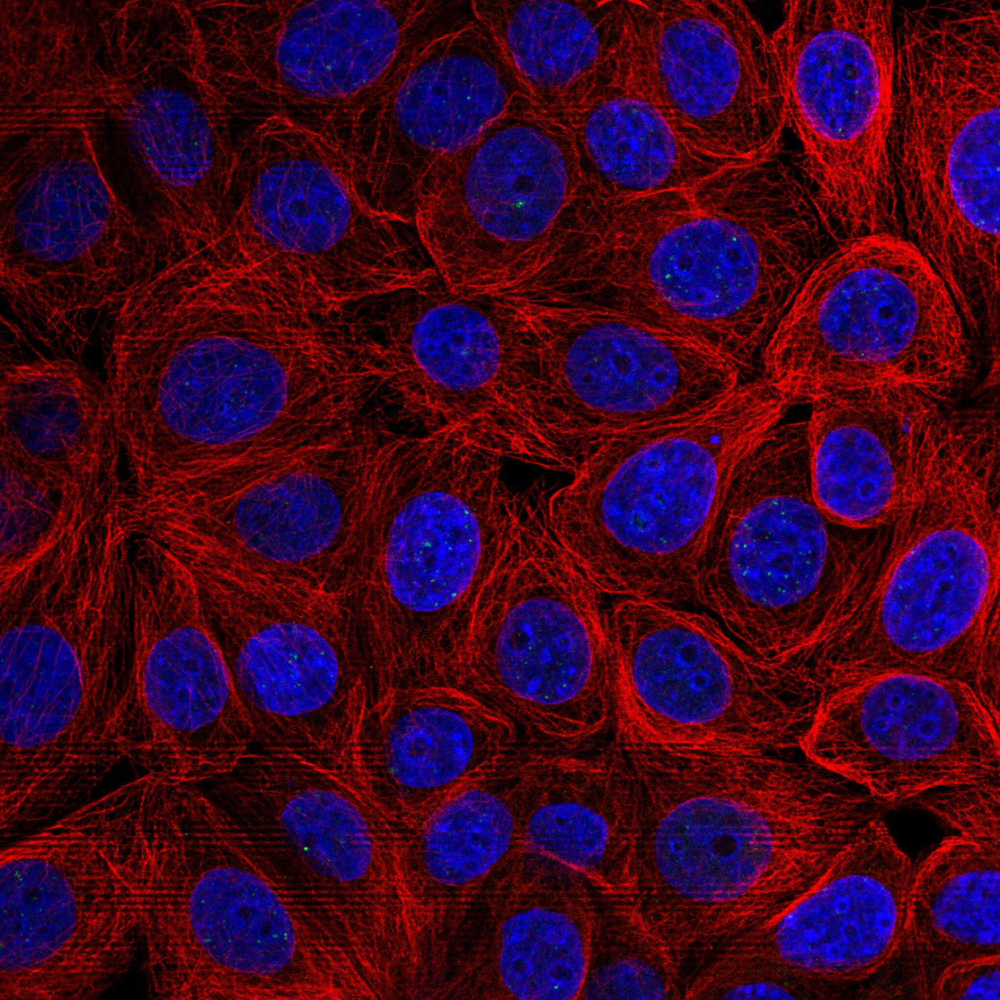
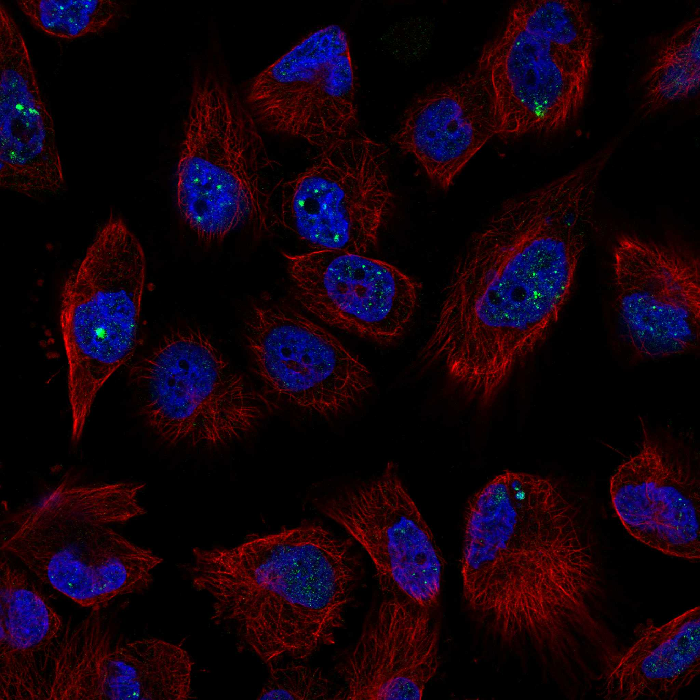
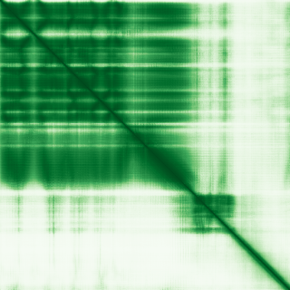

type: protein-evaluation gene: "FAM175A" date: 2026-06-03 tags: [protein-scout, nuclear-protein, evaluation] status: scored ---
FAM175A 核蛋白评估报告 (Full Re-evaluation)
1. 基本信息
| 项目 | 内容 |
|---|---|
| 基因名 / 别名 | FAM175A / ABRA1, CCDC98, FAM175A |
| 蛋白名称 | BRCA1-A complex subunit Abraxas 1 |
| 蛋白大小 | 409 aa / 46.7 kDa |
| UniProt ID | Q6UWZ7 |
| 评估日期 | 2026-06-03 |
IF 图像:  
2. 评分总览
| 维度 | 得分 | 满分 | 加权后 | 关键证据摘要 |
|---|---|---|---|---|
| 核定位特异性 | 9/10 | ×4 | 36 | HPA: Nuclear bodies; UniProt: Nucleus |
| 蛋白大小 | 10/10 | ×1 | 10 | 409 aa / 46.7 kDa |
| 研究新颖性 | 10/10 | ×5 | 50 | PubMed strict=16 篇 (≤20→10) |
| 三维结构 | 9/10 | ×3 | 27 | AlphaFold v6 pLDDT=77.0; PDB: 4JLU, 4U4A, 4Y18, 4Y2G |
| 调控结构域 | 7/10 | ×2 | 14 | InterPro: IPR023239, IPR023238, IPR037518; Pfam: PF21125 |
| PPI 网络 | 2/10 | ×3 | 6 | STRING 0 partners; IntAct 13 interactions |
| 互证加分 | — | max +3 | 2.5 | PDB+AF+STRING+IntAct cross-validation |
| 原始总分 | 145.5/180 | |||
| 归一化总分 | 80.8/100 |
3. 详细分析
3.1 核定位证据
| 来源 | 定位 | 可信度 |
|---|---|---|
| Protein Atlas (IF) | Nuclear bodies | Supported |
| UniProt | Nucleus | Swiss-Prot/TrEMBL |
IF 图像获取: IF图像已下载并嵌入 (2张)
GO Cellular Component:
- BRCA1-A complex (GO:0070531)
- nuclear body (GO:0016604)
- nucleoplasm (GO:0005654)
- nucleus (GO:0005634)
结论: 多个独立数据源一致确认核定位，HPA可靠性高，核定位证据充分。
3.2 蛋白大小评估
评价: 大小适中（200-800 aa），适合常规生化实验和结构解析。
3.3 研究现状
| 指标 | 数值 |
|---|---|
| PubMed strict count | 16 |
| PubMed broad count | 26 |
| 别名(未计入scoring) | Aliases observed but not used for scoring: ABRA1, CCDC98, FAM175A |
关键文献: 1. Genomic Methods Identify Homologous Recombination Deficiency in Pancreas Adenocarcinoma and Optimize Treatment Selection.. *Clinical cancer research : an official journal of the American Association for Cancer Research*. PMID: 32444418 2. Mutational analysis of theFAM175A gene in patients with premature ovarian insufficiency.. *Reproductive biomedicine online*. PMID: 31000350 3. Uncover DNA damage and repair-related gene signature and risk score model for glioma.. *Annals of medicine*. PMID: 37086071 4. New germline BRCA2 gene variant in the Tuvinian Mongol breast cancer patients.. *Molecular biology reports*. PMID: 31273614 5. Association of breast cancer risk with genetic variants showing differential allelic expression: Identification of a novel breast cancer susceptibility locus at 4q21.. *Oncotarget*. PMID: 27792995
评价: 极度新颖，几乎未被系统研究（PubMed ≤20篇）。
3.4 三维结构分析
| 指标 | 数值 |
|---|---|
| AlphaFold 版本 | v6 |
| AlphaFold 平均 pLDDT | 77.0 |
| 高置信度残基 (pLDDT>90) 占比 | 46.9% |
| 置信残基 (pLDDT 70-90) 占比 | 24.4% |
| 中等置信 (pLDDT 50-70) 占比 | 8.8% |
| 低置信 (pLDDT<50) 占比 | 19.8% |
| 有序区域 (pLDDT>70) 占比 | 71.3% |
| 可用 PDB 条目 | 4JLU, 4U4A, 4Y18, 4Y2G |
PAE (Predicted Aligned Error): 
评价: PDB实验结构（4JLU, 4U4A, 4Y18, 4Y2G）+ AlphaFold高质量预测（pLDDT=77.0），结构可信度高。
3.5 结构域分析
| 来源 | 结构域 |
|---|---|
| InterPro/Pfam | InterPro: IPR023239, IPR023238, IPR037518; Pfam: PF21125 |
染色质调控潜力分析: 存在已知结构域注释，可作为功能研究的结构基础。
3.6 PPI 网络
STRING 预测互作 (combined score >0.4):
| Partner | Combined Score | Experimental | 功能类别 |
|---|---|---|---|
| — | — | — | — |
实验验证互作 (IntAct):
| Partner | 方法 | PMID | |
|---|---|---|---|
| BRCA1 | psi-mi:"MI:0096"(pull down) | pubmed:17525340 | imex:IM-19729 |
| ABRAXAS1 | psi-mi:"MI:0096"(pull down) | pubmed:17525340 | imex:IM-19729 |
| RBBP8 | psi-mi:"MI:0007"(anti tag coimmunoprecipitation) | pubmed:17525340 | imex:IM-19729 |
| UIMC1 | psi-mi:"MI:0006"(anti bait coimmunoprecipitation) | pubmed:17525340 | imex:IM-19729 |
| BRCC3 | psi-mi:"MI:0007"(anti tag coimmunoprecipitation) | imex:IM-12079 | pubmed:19615732 |
| BABAM2 | psi-mi:"MI:0007"(anti tag coimmunoprecipitation) | imex:IM-12079 | pubmed:19615732 |
| BABAM1 | psi-mi:"MI:0007"(anti tag coimmunoprecipitation) | imex:IM-12079 | pubmed:19615732 |
| RABGGTB | psi-mi:"MI:0007"(anti tag coimmunoprecipitation) | pubmed:28514442 | doi:10.1038/na |
| TEKT4 | psi-mi:"MI:0007"(anti tag coimmunoprecipitation) | pubmed:28514442 | doi:10.1038/na |
| Xpo1 | psi-mi:"MI:0096"(pull down) | pubmed:26673895 | imex:IM-24970 |
PPI 互证分析:
- 仅IntAct实验
- STRING partners: 0，IntAct interactions: 13
- 调控相关比例: 0 / 0 = 0%
评价: STRING 0 个预测互作，IntAct 13 个实验互作。调控相关配体占比 0%。
3.7 多库互证
| 维度 | 来源 | 结果 | 是否一致 |
|---|---|---|---|
| 三维结构 | AlphaFold pLDDT=77.0 + PDB: 4JLU, 4U4A, 4Y18, 4Y2G | pLDDT=77.0, v6 | 预测+实验 |
| 定位 | UniProt + HPA | Nucleus / Nuclear bodies | 一致 |
| PPI | STRING + IntAct | 0 + 13 interactions | 数据有限 |
互证加分明细:
- PDB + AlphaFold 双源验证: +0.5
- 多库定位一致 (3源): +0.5
- STRING + IntAct 双源验证: +0
- 结构域 + AlphaFold 质量: +0.5
- PDB 多条目覆盖 (≥3): +1.0
总分: +2.5 / max +3
4. 总体评价
推荐等级: ⭐⭐⭐⭐
核心优势: 1. FAM175A — BRCA1-A complex subunit Abraxas 1，极度新颖，几乎未被系统研究（PubMed ≤20篇）。 2. 蛋白大小409 aa，大小适中（200-800 aa），适合常规生化实验和结构解析。
风险/不确定性: 1. PubMed 16 篇，研究基础极有限，功能注释不完整 2. 结构数据质量可接受
下一步建议:
- [ ] 查阅最新关键文献补充研究背景
- [ ] 获取 Protein Atlas IF 图像确认亚细胞定位
- [ ] 设计体外实验验证核定位及潜在调控功能
5. 数据来源
- UniProt: https://www.uniprot.org/uniprotkb/Q6UWZ7
- Protein Atlas: https://www.proteinatlas.org/ENSG00000163322-ABRAXAS1/subcellular
- PubMed: https://pubmed.ncbi.nlm.nih.gov/?term=FAM175A
- AlphaFold: https://alphafold.ebi.ac.uk/entry/Q6UWZ7
- STRING: https://string-db.org/network/9606.ENSP00000
- Data fetched live: 2026-06-03